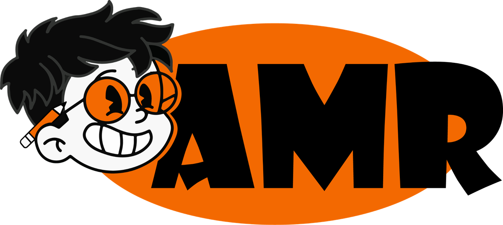

MINARAS / 2026
DEFINED
BY ORIGIN.
PATRAS, GREECEBY ORIGIN.

INDEPENDENT DESIGNER · EGYPT / WORLDWIDE
 hi, that’s meintention.
hi, that’s meintention.I create distinctive visual identities and apparel graphics for brands that want to stand apart.
A closer look at the thinking, craft and detail behind each project.
This is the first edit. The full portfolio will grow with approved project images and detailed case studies.
One creative partner, from the first idea to the final files.
Original garment graphics, placement artwork and cohesive visual direction for fashion collections.
Distinctive identity systems, logo direction, typography and colour systems with a clear point of view.
Campaign visuals, digital assets, layouts and graphic systems built around your brand.
Organised technical documentation and production-ready artwork prepared for manufacturing handover.
Concept development, 3D visualisation and visual consistency across products and brand touchpoints.
A LITTLE CONTEXT
I’m Amr Ahmed, an independent graphic and apparel designer working at the intersection of identity, fashion and visual storytelling.
I partner with emerging and established brands to turn ideas into thoughtful design that feels considered, communicates clearly and works beyond the screen. My approach balances experimentation with practical execution—so the final result looks right and is ready to move forward.
From a single graphic to a wider brand system, I care about the details, the intention behind them and how everything comes together.
GET TO KNOW MY WORKEvery detail has a reason.
Built to feel like you.
Made to work in the real world.
The best projects come from great collaboration. This space is reserved for genuine feedback from the people and brands I’ve worked with.
Client testimonials are being curated.
Only approved feedback, real names and verified brand details will be featured here.A focused process keeps the work clear, collaborative and moving forward.
We discuss your goals, audience, references and deliverables.
I develop concepts and establish a clear creative direction.
We review the selected direction and refine it through agreed revisions.
You receive the final agreed files, prepared for their intended use.
Send a project inquiry with a short description, your goals and any useful references. I’ll review it and get back to you with next steps.
Yes. I work remotely with clients and brands across different countries and time zones.
Yes. Production-oriented artwork and tech packs can be included when agreed in the project scope.
A brief overview of the project, your goals, references if available and an idea of the deliverables and timeline.
Absolutely. I can work within your existing guidelines or help develop a new visual direction where needed.
Tell me what you're building. A few details are enough to start the conversation.
amr.ahmed39200@gmail.com